FSTS Pilot Newsletter, July 2025
Hi everyone,
We are 4 weeks into our first pilot project in Samos, and I thought it would be a good time to share an update. I’ll type a brief synopsis upfront and otherwise give myself the freedom to share at length. This is just a small initiative I'm giving a go, but if you want to learn more about From Seed to Shelter (FSTS) before reading this email, this is a link to the website. I would love to hear any thoughts, feedback, and ideas that this email provokes - don’t hold back!
Synopsis
- We have built a small microgreens farm within a community centre that supports refugees living in Zervou Camp
- There have been quite a few obstacles, but we have achieved decent harvests so far, and feedback from the community about the food has been largely positive
- Going forward we will be expanding the farm
- With regards to this pilot, my main challenge right now is training members of the community to run it without me - I want to have built an ecosystem that will sustain when I leave in 2 months
- I want FSTS to be an organisation that understands nutrition challenges in different refugee contexts and tests well-researched solutions that can be adopted by bigger actors or replicated by grassroots organisations
Rationale for project
Undernutrition is a common problem in refugee camps, and is often to do with a lack of micronutrients in otherwise calorie-dense diets. (See more here)
Microgreens are very nutrient-dense and fast-growing, and could be one way of localising food production at scale in humanitarian contexts. They won’t provide macronutrients (carbohydrates, proteins), but can supplement calorie-dense diets with their high micronutrient content (Vitamins A, C, E, etc.)
What is happening?
In partnership with selfm.aid, I am building (and now running) a small microgreens farm on the Greek island of Samos to support nutritional health in refugee camps. We aim to use the pilot project to test a few things:
- that the community can incorporate the food into their diets;
- that the crops will grow in a harsh environment;
- that the farm can be community run; and
- that this can be cost-effective.
I’m hoping that by demonstrating the above goals we can nudge humanitarian actors towards considering this solution as a part of their programming around food. I am also using this as an opportunity to create instructional material for other community organisations to replicate.
Where we are at
I spent the first week here getting acquainted with selfm.aid, and the next one teaming up with its Maintenance Team to start building some of the infrastructure that we would need to start the farm.
In other words - lots of shelf building!
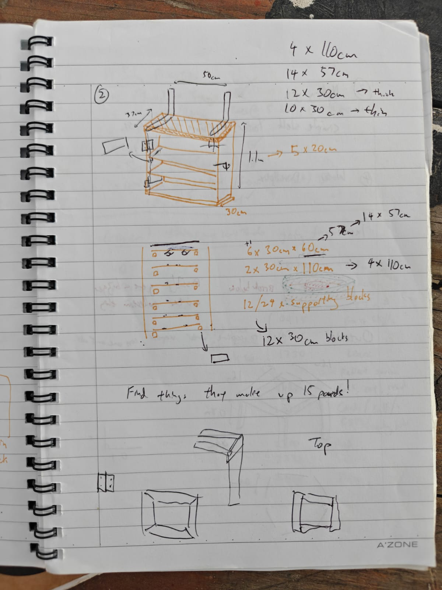
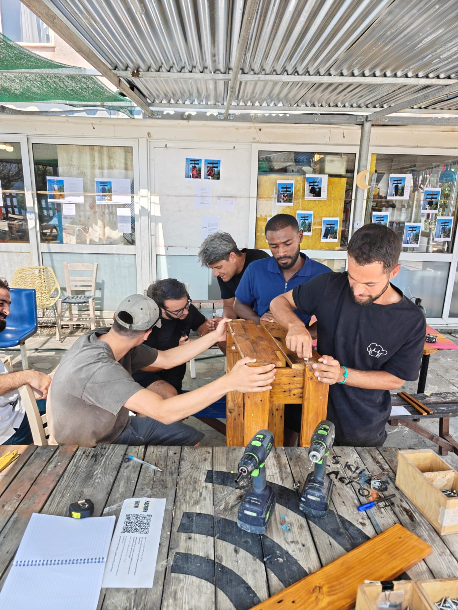
We designed this ‘black-out chamber’ to be hanging so that we could fit it into the ‘dumpster’ of the centre - it was filled with old beams and tiles that were never used, but it was also 5-10°C cooler than anywhere else in the centre any moment of the day, and therefore much more hospitable for the plants.
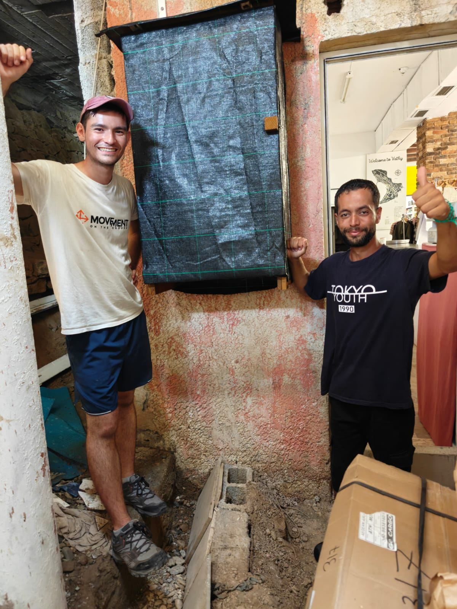
Once that was built we could start sowing the seeds…
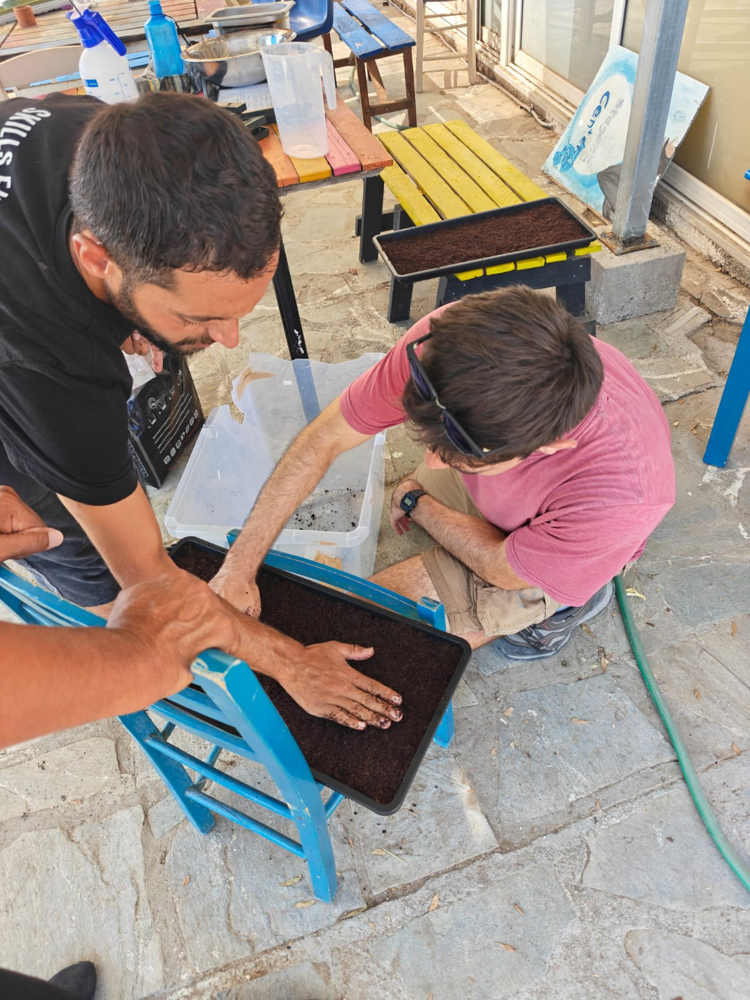
Giving them time to grow, inside and outside…
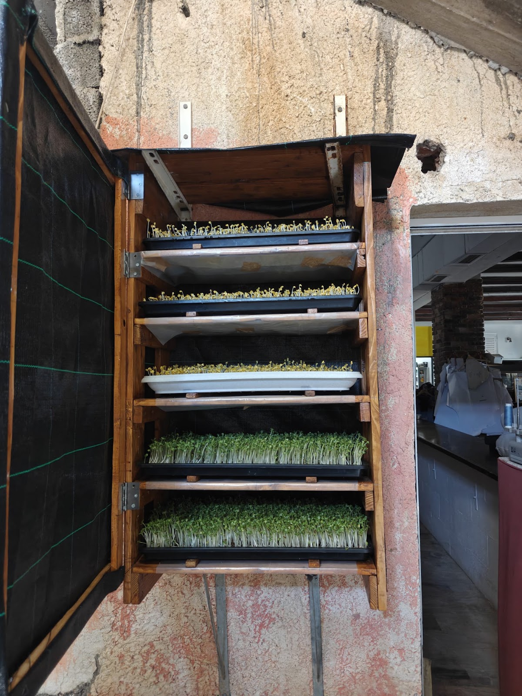
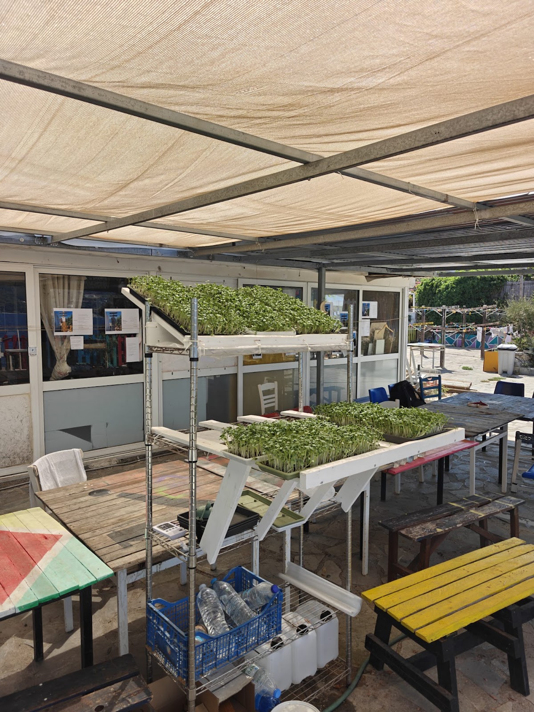
And finally harvesting and incorporating them into food served to the community…
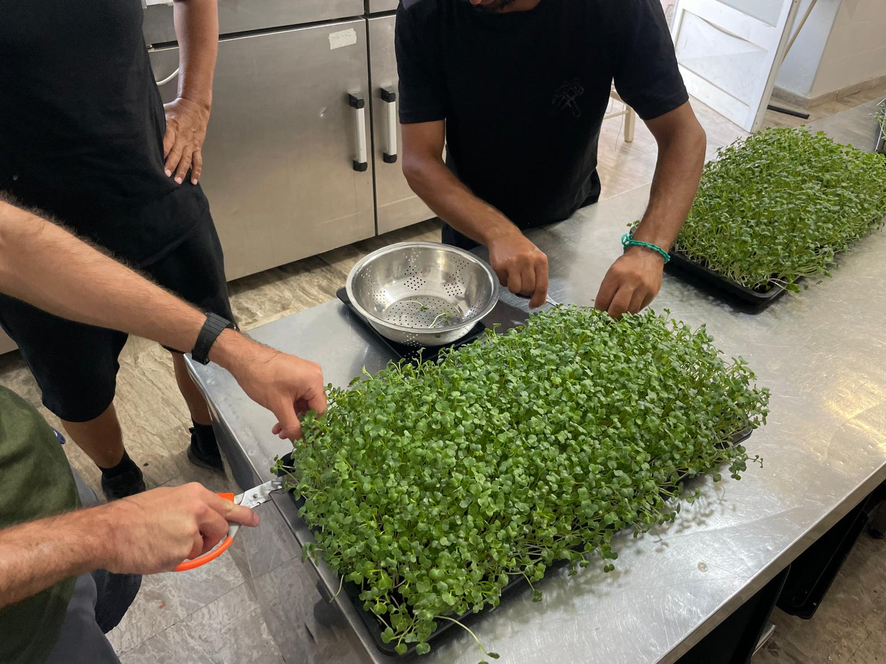
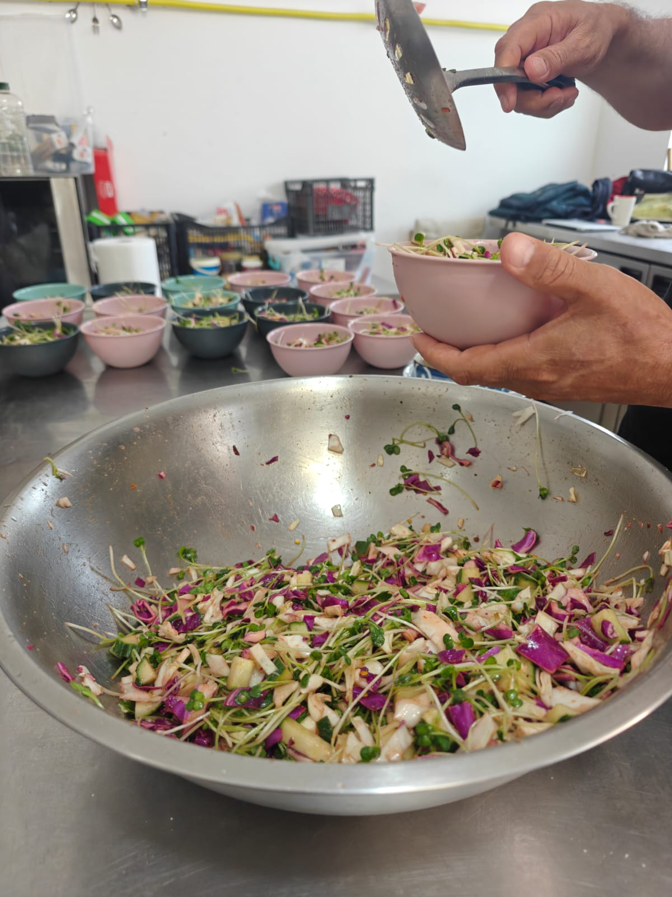
So far we have had 3 harvests, two small ones within the community centre (50-60 meals served), and with a bigger harvest we delivered the microgreens to another NGO that serves many more people (130 meals). The feedback has been good - both served mixed with other food or else alone in a bowl to be snacked on, people are eating it (anecdotally, I think 90% of people are) and generally responding well to it.
There was a gratifying moment on Friday where we had the bowls on the tables to be snacked on, and a child was sent by his mother to get the bowl topped-up, though we had run out. Given my (second) biggest worry was that people would just refuse to eat these unfamiliar vegetables, and so far we have only been growing quite strong-tasting radishes - this has been a huge relief.
Challenges faced so far
Heat
My biggest worry coming to try this in the middle of the summer was that nothing would grow with the heat. As it happened - we had a heat wave last week, including on days that the plants were outdoors. But, thankfully, the plants have grown (though they’ve needed some extra care) and the heat has actually sped up their grow-cycle. I anticipated a harvest every 9 days for the radish microgreens we have been growing, instead we can harvest every 6 days.
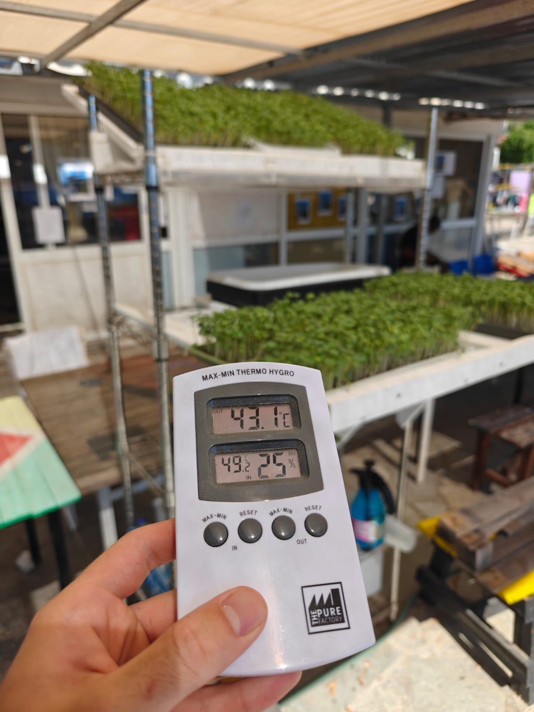
^We’ve had officially recorded highs of up to 43°C, though my thermometer thinks it can get much hotter in the sun.
We have taken quite a few precautions - we found the coolest and darkest room possible for the initial growing phases, and then once outdoors we water frequently, and on the hottest days have even put ice packs under the trays or panicked and moved them indoors again for a few hours.
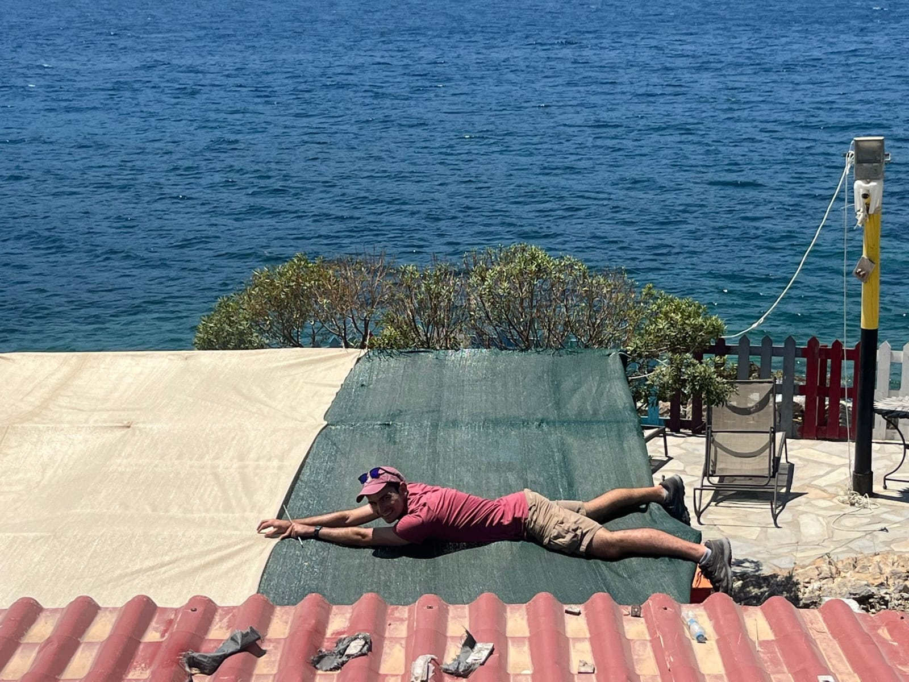
^ I even switched out the green shade netting for a white one which I reasoned would be more reflective and keep the space cooler.
Water quality (and availability)
The next challenge worth mentioning is one that I had not anticipated - the water quality. To anyone who’s studied physics, I might be butchering this explanation, but as I understand it: for good microgreen growth, you want water with an electrical conductivity (EC) of less than 300 µS/cm. This is basically a measure of dissolved salts and minerals. Unfortunately, the tap water here has an EC reading of 1400 µS/cm - 4x over what I was hoping for. I reason being an island the saline content of the water must be really high, because even the filtered water is 1300 µS/cm.
This put us in a bit of a pickle - I didn’t want to buy water because this would defeat the cost-effective goals of the pilot. I also didn’t want to risk using the tap water because that might hurt the plant growth. I tried building a small sunlight distillery very unsuccessfully…
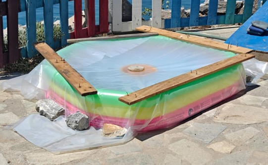
… but then had the idea to check the dehumidifier that we use in the selfm.aid volunteer house I am staying in. Incredibly, it had a reading of 0 µS/cm. So… everyday I now start and end the day boiling whatever water comes out of this little machine (in case there are spores or disease) and the 7-9 litres I get from this device everyday is keeping the farm alive!
This certainly is not the ideal solution because there’s a limit to how much I can expand the farm, but I reason that the water here is particularly poor and many other contexts could have better tap water, or be able to collect rainwater (which isn’t an option here as it doesn’t rain for this third of the year).
Additionally, I think this helps us to derive data for how much we can produce in not only a heat-strained environment, but also a severely water-strained one too. This could help suggest that microgreens farming would work in arid contexts suffering similar challenges.
I might test the tap water eventually to understand how badly that impacts the growth to get a sense of whether it is worthwhile for communities with similar water quality challenges.
Community team
I have been fortunate so far to work with some extremely helpful members of the community. Diaa and Hamid have helped me to take this project from an idea to something tangible. However, last week Diaa, who I had made the community team-lead, was transferred to another camp in Athens with 2 days notice. This was good news for him, because it means his asylum application hasn’t gotten stuck, but it has made me reevaluate how I work with a community in transition. My thinking is that I need a bigger team that can train one another and learn together, and I need to make instructional material that is easy to understand and follow.
The other challenge with being in this community centre is that it only opens 4 days a week, and it is not open during the hours it would be best to water the plants (dawn and dusk). I’ve had to tend to the plants alone each night, which is fine, but not the perfect demonstration of a sustainable and community-owned project.
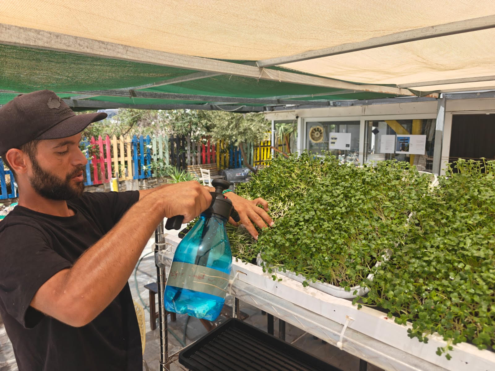
^Diaa was my community team-lead before he was transferred to Athens
Next steps and current priorities
Expand the farm
I had gotten frustrated by the limits of my ‘black-out chamber’ (to 5 trays at a time), and figuring that we ought to prove that this could be done quickly and easily, took a day to build another shelf with a couple shipping pallets. This will allow us to germinate more trays at once, and the current ‘black-out’ shelf can be used just for the 1-2 days of uncovered non-light exposure that the plants need.
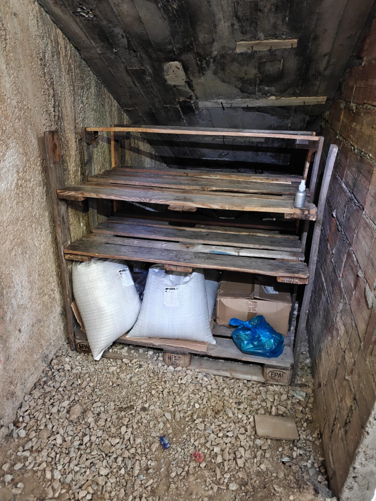
In theory this could triple our output, but balancing the water constraints carefully we plan to double it and see how it goes. Ultimately, I want to be able to show that with less than 10 m², we can produce a good amount of food that supplements the nutritional needs of x many people. We are also starting to test other crops (sunflowers are germinating and peas will follow).
Work on the instructional material (for other orgs to replicate)
Last week, I received interest from another NGO about building a similar set-up on their land. I’ve wanted to use this pilot as a chance to build instructional material for community organisations that want to do this too, and this feels like a good opportunity to put this to the test by co-designing a farm that another community group will take ownership of.
There is another grassroots organisation in Nakivale that I am applying for funding together with, and if we get a small grant I’ll be helping them to start something similar too.
Work on the end-product, and have the right conversations
I want the pilot to spark a conversation with organisations that currently support nutrition in refugee camps. I have an outline for what I think a report should look like for when we wrap the pilot phase in 2 months, and I need to start to piece it together. I am still unsure about how I will get into the rooms that will get our results to interested people, but I’m hoping the right doors will open in time.
The future of From Seed to Shelter
I am coming to terms with the fact that it is going to be hard to find funding to work on this initiative full-time. I would like for From Seed to Shelter to be an initiative that builds an evidence-base of nutrition solutions for different situations that policy-makers, INGOs, and grassroots organisations can benefit from. I think this would require pilots like this one for different contexts, but I can’t see us getting funding for the exploratory work that is needed after this pilot is wrapped up in late September.
For now, the goal is to build a better awareness of different nutritional contexts cheaply. I am in contact with a student group at Oxford about doing a landscape study to better understand some of the nuances in food provision and its gaps. If we can identify some gaps and possible interventions, the plan would be to work with grassroots organisations to trial these localised solutions.
In the meantime, I’m thinking I will run a fundraiser to cover the costs I’ve incurred here, and look for work that will allow me to keep one eye on this. One other possibility (perhaps far-fetched) is to hand ownership of this project over to a bigger refugee-supporting organisation and pitch my own job to continue the project. This pilot will help me determine if the project is worthwhile at all, and if so I’ll have to think more about how to make it sustainable going forward. (I’m extremely open to any thoughts or ideas on this front!)
Goals stocktake
Goal | Status | Next steps | |
Pilot test | Community incorporates the food into their diets | Positive-leaning | Grow different types of crops, expand distribution and collect feedback from community more formally |
Crops will grow in a harsh environment | Positive-leaning | Grow different types of crops, record output from each harvest | |
Farm can be community-run | I know it can be, but this perhaps is not the right NGO for it (because we are situated too far from the camp) | Prove what we can - even if some tasks need to be performed by international volunteers staying closeby, a large part of the work can be owned by community volunteers | |
Microgreen farming is cost-effective | One radish tray has an input cost of €0.60, and yields 200g+ of produce in 6 days. I estimate a sunflower tray will cost close to €0.90 per tray, but yield 400g+ over 9-10 days | Record output from each harvest, do an analysis of the cost per nutritional value produced and a comparison with other nutrition delivery methods | |
Pilot outcomes | Data collection | In progress | Continue to record results and document learnings from the pilot |
Instructional material | 30% there: some basic materials have been drafted | Complete materials for the sustainability of the farm at selfm.aid, and create new materials with other organisations in mind | |
Pilot report | 10% there: outline complete | Determine how best to present data collected |
Reflections
This month has been difficult at points. I’ve often been racked with doubt about what I’m doing here, if this is worthwhile, if I’m learning enough, where I’m going next, etc. It’s been stressful and lonely at times, and I’ve thrown so much into this project that I feel defined by it in a way that I know is unhealthy.
As I write this I’m also keenly aware of how ‘me’-centric these worries are, and I feel guilty for being where I am but sometimes more wrapped up in the project than I am in the people that I meet everyday. I wonder what’s it all for at the end of the day if I don’t make more of an effort to be present, to be with people.
At the same time, I have been extremely blessed - new friends I’ve made and old friends who’ve checked in, support for the project from people near and far, space to think, places to swim. I know I’m lucky to be able to leave my job and try something for a few months.
Whether it comes to anything, or just being something that I tried and learnt from, I think I want to take a disposition of being willing to try something, and trusting that God will do the rest.
______________
Thank you for reading this and supporting me on this journey. If anything strikes you don't be afraid to share, any thoughts/ feedback are very welcome!
Till next time,
Ben 🪣
3 August 2025